Zheng Wang (王正)
JSPS Postdoctoral Fellowship Researcher (日本学術振興会特別研究員)
National Institute of Informatics (NII), Japan
Shin’ichi Satoh Laboratory, National Institute of Informatics (NII), 2-1-2 Hitotsubashi, Chiyoda-ku, Tokyo 101-8430, Japan
wangz(at)nii.ac.jp / Google Scolar
I am currently a JSPS Postdoctoral Fellowship Researcher at Satoh-Lab, National Institute of Informatics (NII), Japan, collaborating with Prof. Shin’ichi Satoh. In Sep. 2017-Sep. 2018, I was a Project Researcher under the support of JST CREST project ‘Experience and Action Sensing of Media Consumers based on Unknown Target Retrieval and Recognition Framework’. In Jun. 2017, I received my Ph.D. at National Engineering Research Center for Multimedia Software (NERCMS), Wuhan University with honor, under the supervision of Prof. Ruimin Hu. My research interests focus on person re-identification and instance search.
News
- 2018.09.30, I was awarded Academic Innovation Award, Wuhan University (50, 000 RMB).
- 2018.09.24-2018.09.28, I gave a talk at the International Forum for HUASHAN Scholars, Xidian University.
slides - 2018.09.08, Prof. Satoh gave a lecture at ECCV 2018 tutorial ‘Video Recognition and Retrieval at the TRECVID Benchmark’, with the topic ‘Instance Search (INS) task at TRECVID’.
slides - 2018.08.01, I was awarded the JSPS Postdoctoral Fellowships for Research in Japan.
- 2018.07.26-2018.08.01, I visited NAIST International Collaborative Laboratory for Robotics Vision.
- 2018.05.25-2018.05.28, I gave a talk at the Fifth Wuhan University International Forum for Interdisciplinary Sciences and Engineering Forum Season, Wuhan University.
slides - 2017.11.20-2017.11.21, I gave a talk at the Sixth “Zijin” High-level Forum for Overseas Young Researchers, Nanjing University of Science and Technology.
slides - 2017.10.01, I started to work at Satoh-Lab, as a postdoctoral researcher.
- 2017.09.30, I finished a research assistant period at Prof. Xiang Bai’s Lab, from Jul. 2017 to Sep. 2017.
- 2017.09.20, I was awarded the ACM Wuhan Doctoral Dissertation Award, 2017.
- 2017.05.10, I released some collected Re-id Resources.
Selected Publications
Conference

Incremental Deep Hidden Attribute Learning (Accepted)
Z Wang, X Bai, M Ye, S Satoh
ACM Multimedia, 2018
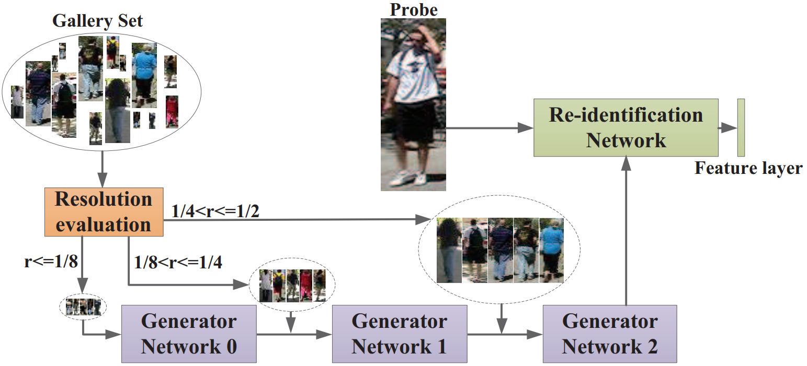
Cascaded SR-GAN for Scale-Adaptive Low Resolution Person Re-identification
Z Wang, M Ye, F Yang, X Bai, S Satoh
IJCAI, 2018, code
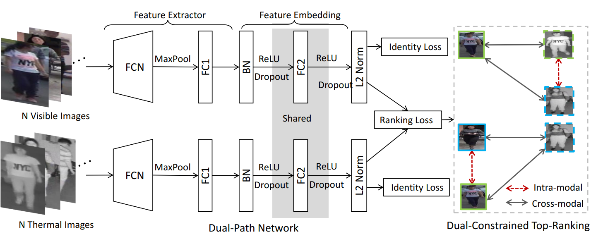
Visible Thermal Person Re-Identification via Dual-Constrained Top-Ranking
M Ye, Z Wang, X Lan, P C. Yuen
IJCAI, 2018, code
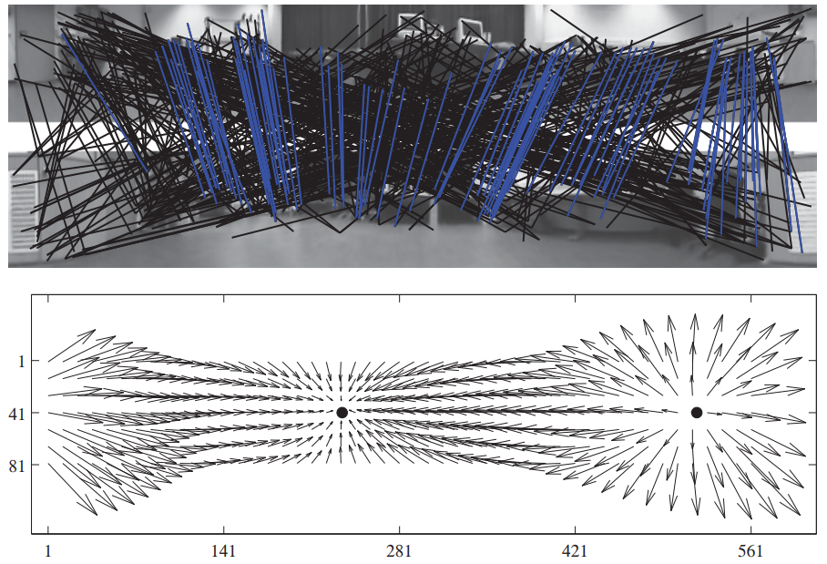
Visual Homing via Guided Locality Preserving Matching
J Ma, J Zhao, J Jiang, H Zhou, Y Zhou, Z Wang, X Guo
ICRA, 2018, video
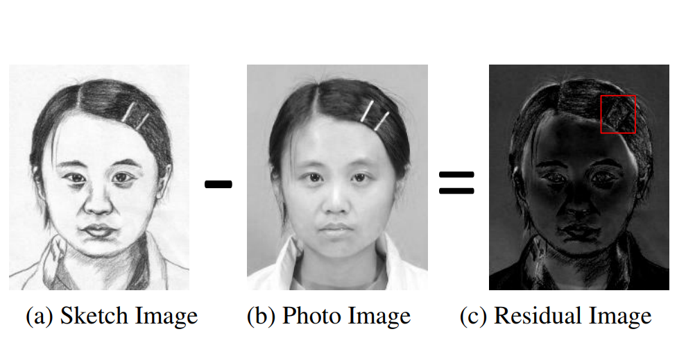
Residual Learning for Face Sketch Synthesis
J Jiang, Y Yu, Z Wang, J Ma
ICASSP, 2018
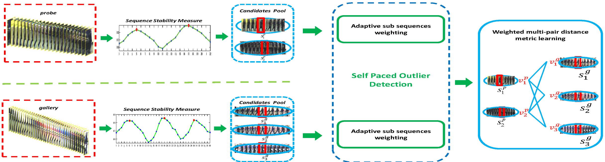
Video-based Person Re-identification via Self Paced Weighting
W Huang, C Liang, Y Yu, Z Wang, W Ruan, R Hu
AAAI, 2018
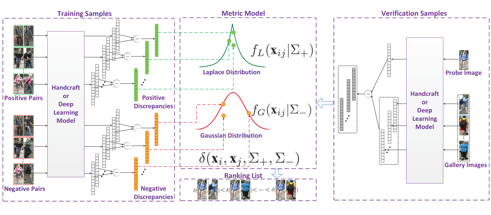
Statistical Inference of Gaussian-Laplace Distribution for Person Verification
Z Wang, R Hu, Y Yu, J Jiang, J Ma, S Satoh
ACM Multimedia, 2017
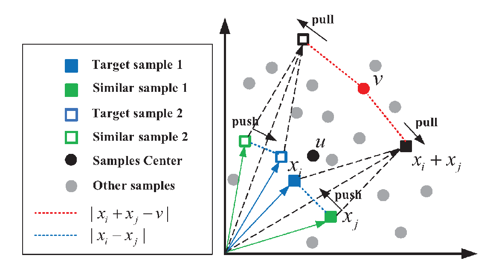
TAICHI Distance for Person Re-identification
Z Wang, R Hu, Y Yu, C Liang, C Chen
ICASSP, 2017
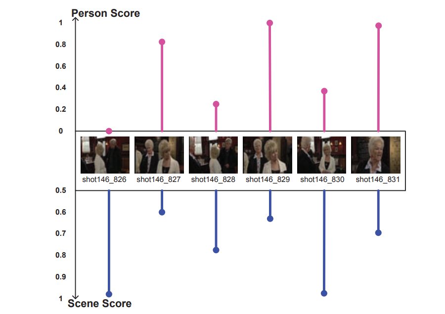
PS Instance Retrieval via Early Elimination and Late Expansion
J Lan, J Chen, Z Wang, C Liang, S Satoh
ACM Multimedia Workshop, 2017
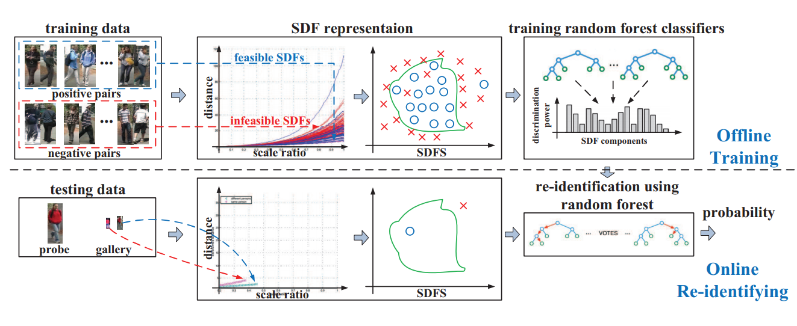
Scale-adaptive Low-resolution Person Re-identification via Learning A Discriminating Surface
Z Wang, R Hu, Y Yu, J Jiang, C Liang, J Wang
IJCAI, 2016
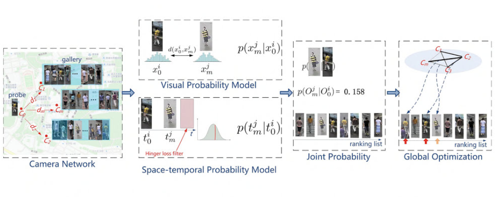
Camera network based person re-identification by leveraging spatial-temporal constraint and multiple cameras relations
W Huang, R Hu, C Liang, Y Yu, Z Wang, X Zhong, C Zhang
MMM, 2016
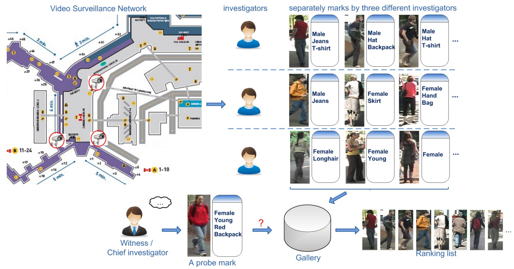
Multi-Level Fusion for Person Re-identification with Incomplete Marks
Z Wang, R Hu, Y Yu, C Liang, W Huang
ACM Multimedia, 2015
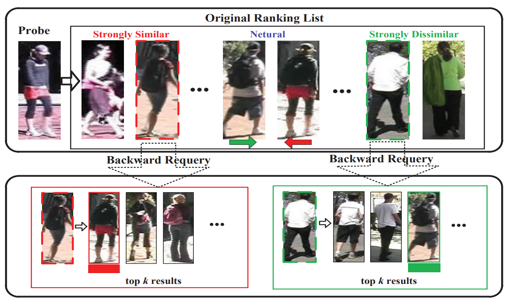
Ranking Optimization for Person Re-identification via Similarity and Dissimilarity
M Ye, C Liang, Z Wang, Q Leng, J Chen
ACM Multimedia, 2015
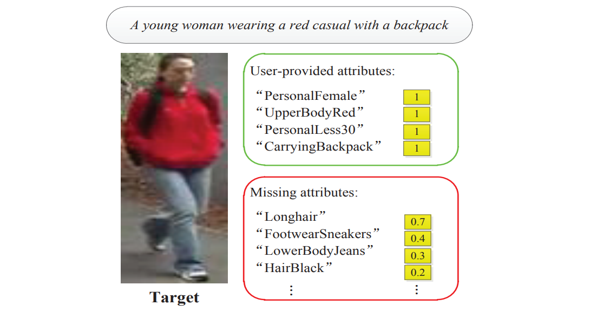
Specific Person Retrieval via Incomplete Text Description
M Ye, C Liang, Z Wang, Q Leng, J Chen, J Liu
ICMR, 2015

Person re-identification using data-driven metric adaptation
Z Wang, R Hu, C Liang, J Jiang, K Sun, Q Leng, B Huang
MMM, 2015
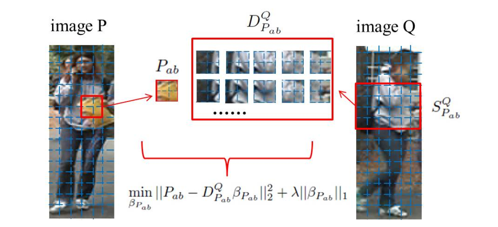
Sparsity-based occlusion handling method for person re-identification
B Huang, J Chen, Y Wang, C Liang, Z Wang, K Sun
MMM, 2015
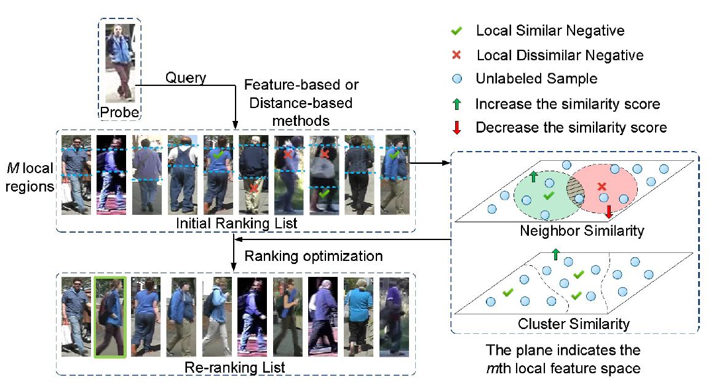
Region-based Interactive Ranking Optimization For Person Re-identification
Z Wang, R Hu, C Liang, Q Leng, K Sun
PCM, 2014, Best Paper Award, video
Journal
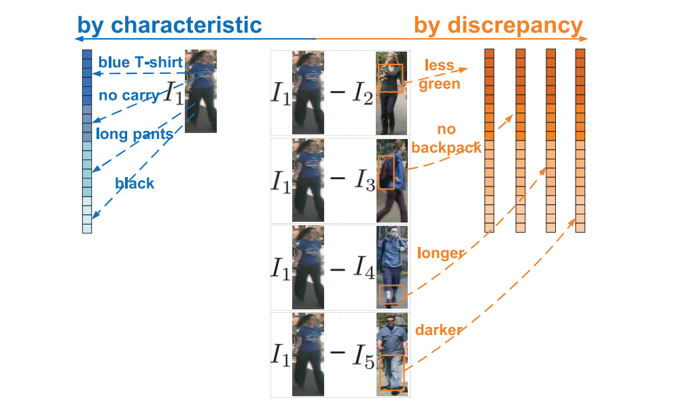
Person Reidentification via Discrepancy Matrix and Matrix Metric
Z Wang, R Hu, C Chen, Y Yu, J Jiang, C Liang, S Satoh
IEEE Transactions on Cybernetics, 2018, code
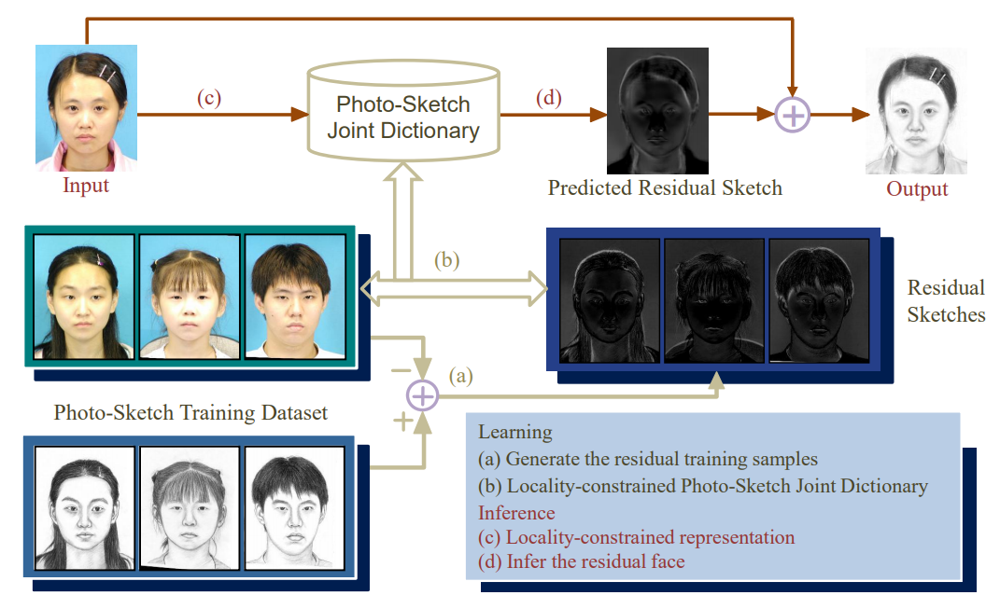
Graph-Regularized Locality-Constrained Joint Dictionary and Residual Learning for Face Sketch Synthesis
J Jiang, Y Yu, Z Wang*, X Liu, J Ma
IEEE Transactions on Image Processing, 2018
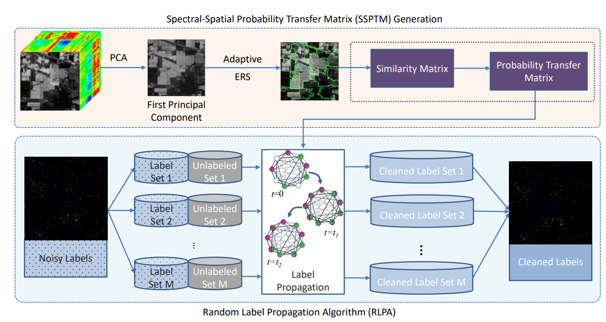
Hyperspectral Image Classification in the Presence of Noisy Labels
J Jiang, J Ma, Z Wang, X Liu
IEEE Transactions on Geoscience and Remote Sensing, 2018, code
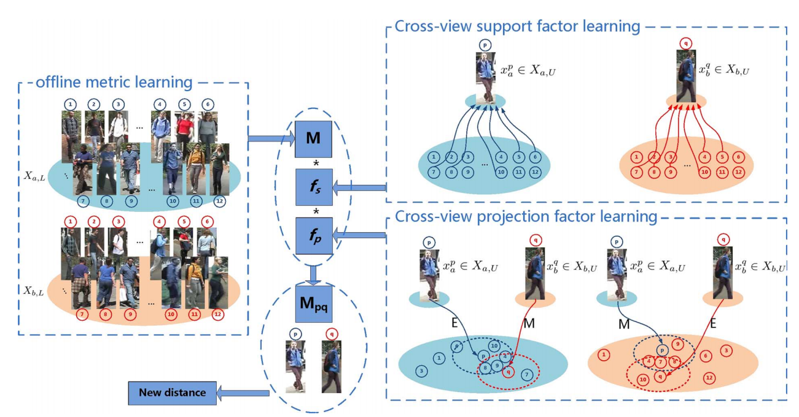
Zero-shot Person Re-identification via Cross-view Consistency
Z Wang, R Hu, C Liang, Y Yu, J Jiang, M Ye, J Chen, Q Leng
IEEE Transactions on Multimedia, 2016, code
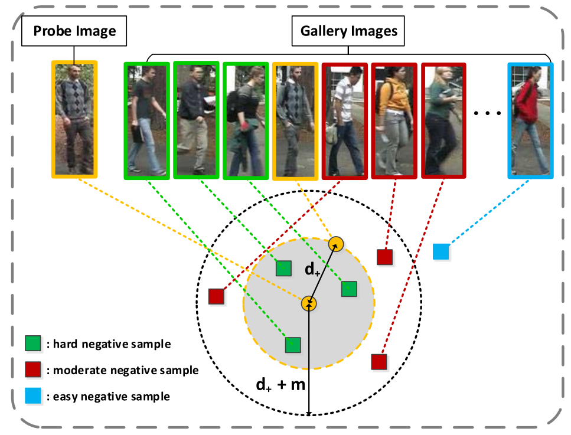
DeepList: Learning Deep Features with Adaptive Listwise Constraint for Person Re-identification
J Wang, Z Wang, C Gao, N Sang, R Huang
IEEE Transactions on Circuits and Systems for Video Technology, 2017, code
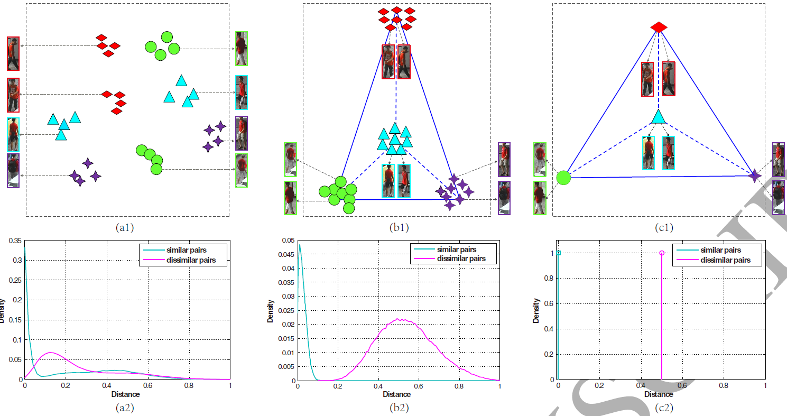
Equidistance Constrained Metric Learning for Person Re-identification
J Wang, Z Wang, C Liang, C Gao, N Sang
Pattern Recognition, 2017, code
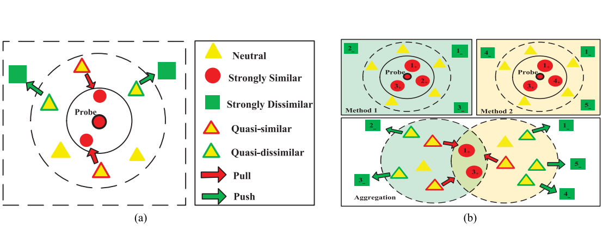
Person Re-identification via Ranking Aggregation of Similarity Pulling and Dissimilarity Pushing
M Ye, C Liang, Y Yu, Z Wang, Q Leng, C Xiao, J Chen, R Hu
IEEE Transactions on Multimedia, 2016, code
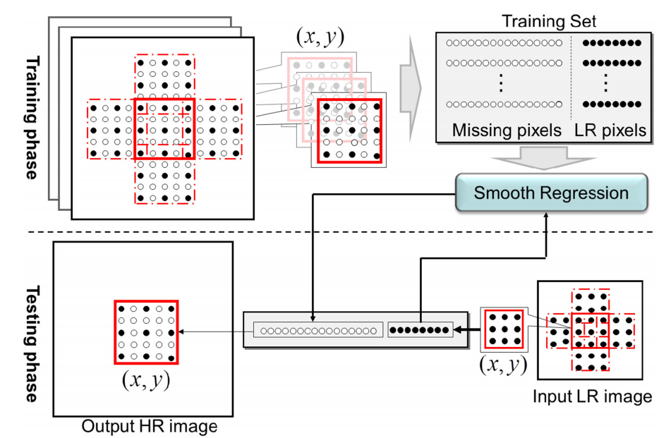
SRLSP: A Face Image Super-Resolution Algorithm Using Smooth Regression with Local Structure Prior
J Jiang, C Chen, J Ma, Z Wang, Z Wang, R Hu
IEEE Transactions on Multimedia, 2017, code
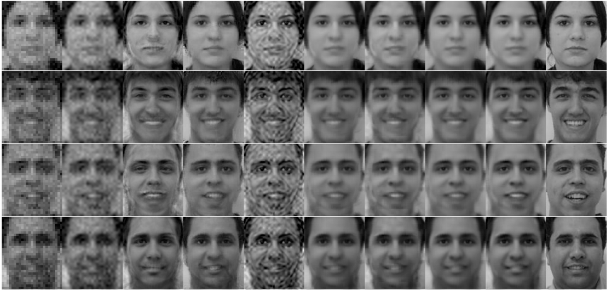
Noise Robust Face Image Super-Resolution Through Smooth Sparse Representation
J Jiang, J Ma, C Chen, X Jiang, Z Wang
IEEE Transactions on Cybernetics, 2017, code
Technical report
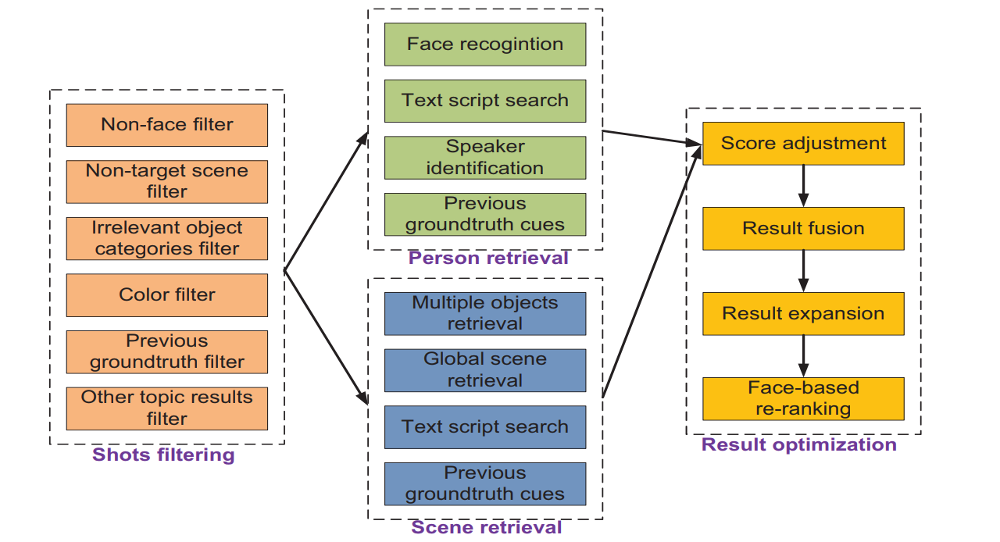
WHU-NERCMS at TRECVID2016: Instance Search Task
Z Wang, et al.
TRECVID Workshop, 2016, link, Top Performance
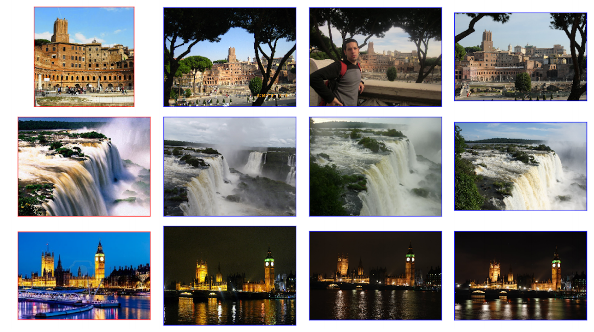
Landmark Retrieval via Local Guidance and Global Expansion
A Su, S Ly, F Yang, R Hinami, Q Meng, S Phan, Y Matsui, Z Wang, S Satoh
MIRU, 2018, slides, poster, Google Landmark Retrieval Challenge-7th
Services
- PC Member/Reviewer for the following conferences:
- AAAI Conference on Artificial Intelligence (AAAI) 2019
- International Conference on Pattern Recognition (ICPR) 2018
- Pacific-Rim Conference on Multimedia (PCM) 2018
- …
- Reviewer for the following journals:
- IEEE Transactions on Image Processing
- IEEE Transactions on Multimedia
- IEEE Transactions on Circuits and Systems for Video Technology
- IEEE Transactions on Systems, Man and Cybernetics: Systems
- IEEE Access
- Pattern Recognition
- Knowledge-Based Systems
- Sensors
- …
Awards
- ACM Wuhan Doctoral Dissertation Award, Association for Computing Machinery, 2017
- Graduation with Honors, Wuhan University, 2017
- The First Prize of Hubei Science and Technology Progress, Hubei Province, 2016
- Academic Innovation Award, Wuhan University, 2016, 2018
- Best Paper Award, Pacific-Rim Conference on Multimedia (PCM), 2014
Collaborators
- Mang Ye, Hong Kong Baptist University
- Junjun Jiang, Harbin Institute of Technology